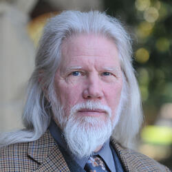
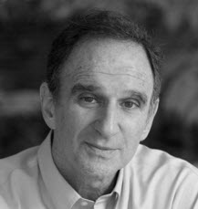

Deux Cryptographes
En cryptographie, l'échange de clés Diffie-Hellman, nommé d'après ses auteurs Whitfield Diffie et Martin Hellman, est une méthode publiée en 1976. Elle permet à deux agents, appelés traditionnellement Alice et Bob, de convenir d’un nombre secret (utilisé comme clé de chiffrement) sans qu’un tiers, nommé Ève, puisse le découvrir, même en écoutant tous leurs échanges. Cette invention a valu aux deux chercheurs le prix Turing en 2015.
Presentation briève de Diffie-Hellman

Biographie de Diffie
Bailey Whitfield « Whit » Diffie (né le 5 juin 1944) est un cryptologue américain. Il est, avec Martin Hellman et Ralph Merkle, l'un des pionniers de la cryptographie asymétrique qui utilise une paire de clés publique et privée.
En 1976 il publie, avec Martin Hellman, l'article New Directions in Cryptography . La méthode entièrement nouvelle décrite dans cet article concerne un problème fondamental en cryptographie : la distribution des clés. Cette méthode sera par la suite nommée méthode d'échange de clés Diffie-Hellman. Ce principe est aussi à l'origine de méthodes à clés asymétriques ultérieures comme le RSA ou ElGamal.

Biographie de Martin
Martin E. Hellman (né le 2 octobre 1945) est un cryptologue américain, connu pour ses travaux sur la cryptographie asymétrique. En 1966, Martin Hellman obtient un bachelor à l' Université de New York, suivi d'un master à l' université Stanford en 1967 et un doctorat en 1969.
De 1969 à 1971, il est professeur assistant au Massachusetts Institute of Technology. En 1971, il retourne à Stanford pour poursuivre ses recherches.Il a pris sa retraite de l'université en 1996, mais continue de travailler sur des sujets liés à la cryptographie et à la sécurité de l'information comme conférencier invité, consultant et membre de divers comités et groupes de recherche.